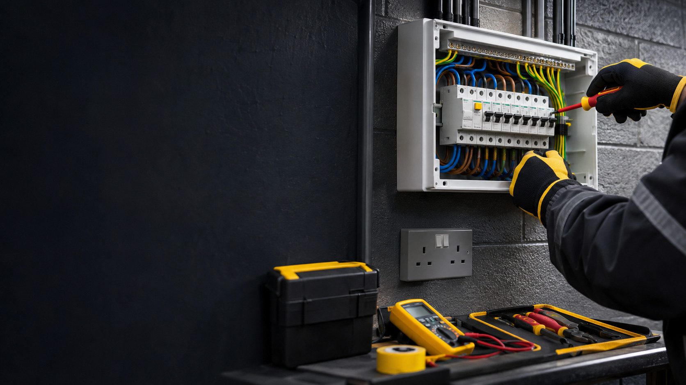

Electrical services / sample business
BrightCircuitElectrical
Fault finding, lighting, sockets, consumer units, testing and EV charger points. Call it in when something is wrong, plan it in when it is not.

Generated concept image
- A Consumer unit
- B Socket outlet
- C Toolbox
- D Test equipment
- E Tool tray
N1 How the work flows
From the first call to a tested circuit.
Read it as a series circuit: the job enters at the supply and every stage has to pass before the next one has power.
-
01 Supply
You tell us what is wrong
Use the enquiry board or the emergency button. Say what you can see, where it is and how soon you need someone.
-
02 Measure
We find the fault
Test equipment comes out before anything is changed, so the repair is based on a reading and not a guess.
-
03 Switch
We repair or fit
Sockets, lighting, a consumer unit, an EV charger point or smoke alarms. The plan is agreed with you first.
-
04 Earth
We test and write it up
Circuits are tested after the work and you get a plain summary of what was done. Any paperwork depends on the job.
N2 Services
Flip a breaker to see what it covers.
Each way on the board is a service. The switch is a real control: tap it, click it, or focus it and press Space or Enter.
-
Circuits that trip, sockets that have gone dead, lights that flicker or fail. We trace the fault with test equipment and tell you what we found before changing anything.
-
New or replacement light fittings, switches and dimmers, indoors and outdoors, and extra lighting where a room needs it.
-
Adding, moving or replacing sockets, and replacing or extending a consumer unit.
-
Testing existing circuits and writing up the results. Which documents a job needs is confirmed with you before work starts.
-
Fitting a charge point at a home or on site, including the cable route and a separate circuit where the job needs one.
-
Fitting smoke and heat alarms, linked together where the layout suits.
N3 Enquiry board
Wire up an enquiry.
A demonstration of the enquiry journey. Five short steps and a review. Nothing is sent, stored or booked, and no real details are needed.
- Service
- Urgency
- Area
- Details
- Contact
- Review
Demonstration: nothing was sent
Enquiry summary
In a live site this would reach the business. Here it goes nowhere: nothing was sent, stored or booked, and no reply will follow.